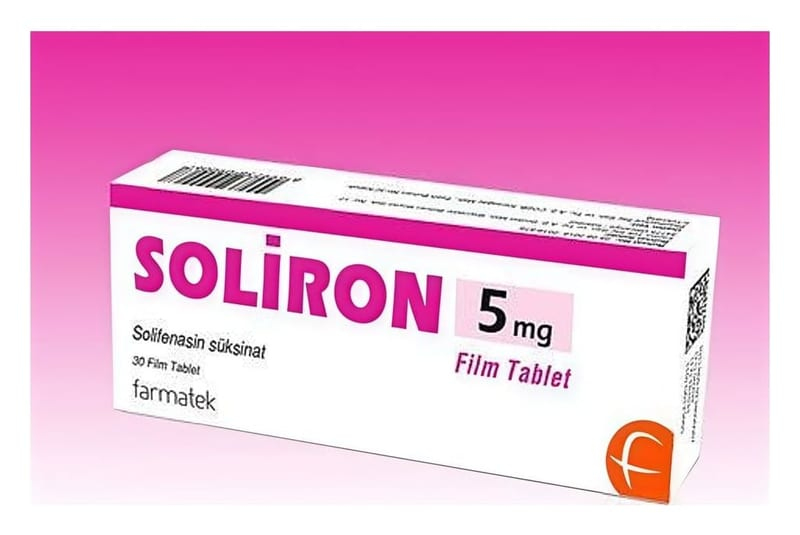

Soliron 5 mg Film Tablet, 30 Adet

Ne için kullanılır
KT · Bölüm 1SOLİRON idrar yollarındaki spazmı giderici (üriner antispazmotik) olarak bilinen bir ilaç grubuna dahildir.
Hayvansal kaynaklı laktoz monohidrat (sığır kaynaklı) içermektedir.
Açık sarı renkli, yuvarlak, bikonveks film kaplı tablettir. SOLİRON 30 tabletlik ambalajlarda
kullanıma sunulmuştur.
SOLİRON aşırı çalışan idrar torbası belirtilerinin tedavisinde kullanılan bi r tablettir. Bu belirtiler arasında sık idrara çıkmak ihtiyacı, sık ışarak tuvalete gitme ihtiyacı, zamanında tuvalete yetişememenizden kaynaklanan idrar kaçırma bulunmaktadır. SOLİRON alındığı zaman etkin madde olan solifenasin vücudunuza salınarak idrar torbanızın faaliyetini azaltır ve idrar torbanızı kontrol altına alabilmenizi sağlar.